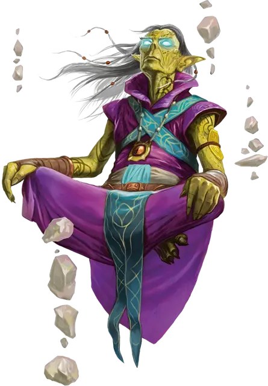

Гитцерай футурист
Githzerai Futurist
Средняя Аберрация (Гит)

Класс Доспеха 16 (псионическая защита)
Хиты 149 (23к8 + 46)
Скорость 40 футов
| мод | спас | ||
|---|---|---|---|
| СИЛ | 14 | +2 | +6 |
| ЛОВ | 17 | +3 | +7 |
| ТЕЛ | 15 | +2 | +2 |
| мод | спас | ||
|---|---|---|---|
| ИНТ | 17 | +3 | +7 |
| МДР | 17 | +3 | +7 |
| ХАР | 13 | +1 | +1 |
Навыки Восприятие +7, Магия +7, Проницательность +7
Чувства истинное зрение 30 футов, пассивное Восприятие 17
Языки Общий, Гитский
Опасность 9 (5000 опыта)
Бонус мастерства +4
Особенности
Психическая защита. Пока гитцерай не носит броню и не носит щит, к его КД добавляется модификатор Мудрости.
Действия
Мультиатака. Гитцерай совершает три Безоружные атаки или Псионическим снарядом.
Безоружная атака. . Рукопашная атака оружием: +7 к попаданию, досягаемость 5 футов, одна цель. Попадание: 12 (2к8 + 3) дробящего урона плюс 11 (2к10) урона психической энергией.
Псионический снаряд. . Дальнобойная атака заклинанием: +7 к попаданию, дистанция 60 футов, одна цель. Попадание: 21 (4к8 + 3) урона психической энергией.
Использование заклинаний (Псионика). Гитцерай накладывает одно из следующих заклинаний, используя Мудрость в качестве базовой характеристики и без использования материальных компонентов (Сл спасброска от заклинаний 15):
• Неограниченно: рассеивание магии [dispel magic], левитация [levitate] (только на себя), волшебная рука [mage hand] (рука невидима), видение невидимого [see invisibility];
• 1/день каждое: уход в иной мир [plane shift] (только на себя), наблюдение [scrying] (действием), замедление [slow], телекинез [telekinesis];
Реакции
Понимание будущего (3/день). Когда гитцерай или существо, которое он может видеть, совершает бросок атаки, спасбросок или проверку характеристик, гитцерай может дать этому броску преимущество или помеху.
Описание
Гитцерай футурист вышли за пределы своих возможностей с помощью сосредоточенных медитации и теперь могут заглядывать в будущее. Они предвидят возможные исходы сражений, используя эти предзнаменования, чтобы склонить чашу весов в свою пользу.
Гитцераи
Гитцераи происходят от древнего народа, который также был прародителями гитьянки — все они были уничтожены или преобразованы свежевателями разума. Многие гитцераи обитают в Лимбо, оттачивая свои псионические способности, создавая свои дома на этом плане полном хаоса. Гитцераи, описанные здесь, часто пересекают планы, переходя между ними через порталы в Сигиле и Внешних землях. Чтобы узнать больше о других гитцераях, ознакомьтесь с "Бестиарием".